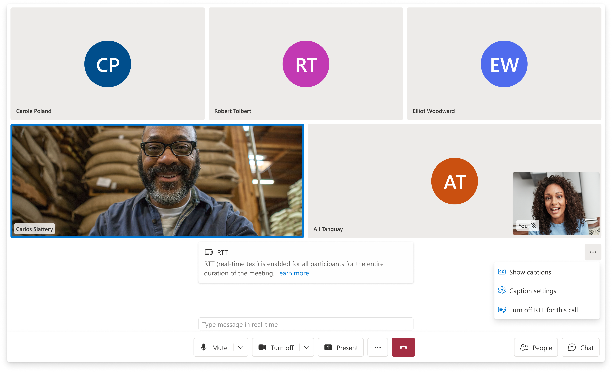

Real-Time
Text (RTT)

The challenge
RTT (Real-Time Text) transmits text character-by-character as it's typed — not as completed messages. It's the communication mode that lets someone who is deaf or has a speech disability participate in a live voice call in real time. ACS had no RTT capability across any surface. The EU Accessibility Act imposed a hard enforcement deadline of June 2025.
The interaction model was unlike anything else in the UI Library: text appearing mid-thought, from multiple speakers at once, inside a live call that already has video, audio, and call controls competing for space. There was no prior art to adapt. I argued this belonged in the call layer — not chat — took ownership, and designed the model from scratch. It became the first RTT implementation shipped across Microsoft.
I designed the RTT interaction model and the panel component in Figma. Jessica Downey and the design team were partners on visual refinement and platform-specific execution across iOS and Android.
Why the call layer
RTT is session-scoped, not message-scoped
When RTT surfaced in planning, it was pointed toward the chat team. Chat handles real-time communication — it seemed like a natural fit. I pushed back: RTT is fundamentally different from chat. It doesn't produce messages. It produces a live stream of character-by-character input that disappears when the call ends. It has no threading, no history, no "send" action. Sending it through the ChatComposite would have meant building an abstraction on top of a completely wrong model.
More practically: the users who need RTT are on a voice call. They're not switching to a chat window. The interface has to be present inside the call, at the same level of persistence as captions — visible, responsive, dismissible without ending the session.
I made the case, took cross-team ownership, and built the scope for web, iOS, and Android simultaneously, coordinating across IC3, Teams, and ACS DevRel on the transmission protocol and Teams interop behavior.
Before
What users who needed RTT had to work around
Before this shipped, a person who is deaf or has a speech disability joining an ACS-powered call had two options — neither designed for their actual use case. Captions worked one way: they could read what others were saying, but had no real-time channel to respond in kind during the live conversation. The chat panel existed, but it's an asynchronous message thread — wrong model for a live exchange, and requires leaving the call context to use it.
The workaround was essentially: type in chat, hope the other person is watching it, lose the thread of the live conversation. For a telehealth appointment or a financial consultation, that's not a viable experience. RTT was never in ACS because no one had scoped it to the right layer — it kept getting treated as a chat feature rather than a calling feature, which is why it had never shipped.
Design decisions
Two people thinking out loud, simultaneously, during a call
The interaction state RTT creates is genuinely novel in calling UI. Two participants can be typing at the same time. Neither has finished a thought. Both streams are visible to everyone in the call. And the text updates continuously — not in discrete message events but character by character, in real time.
The panel had to solve this without adding noise. The video gallery already carries a lot. Captions can be on. The control bar is always present. Every element I added to this environment had to justify itself visually and not compete with the call itself.
Design Decision
The solution that survives theming
The first approach used color: in-progress text in a muted hue, completed text in the standard foreground. Clear in isolation. It solved the "which text is finished?" problem elegantly in a controlled environment.
The problem: color doesn't survive deployment. The UI Library ships white-label — customers apply their own brand tokens. A bank uses their primary blue. A hospital uses their green. A tech company uses their dark theme. Color-coded text states look fine in Figma and break the moment they're rendered inside a custom theme. The hue I chose for "in progress" is now someone's brand primary — the distinction disappears.
In-progress text renders at reduced opacity and snaps to full weight when the speaker pauses. Opacity is a rendering property, not a color token — it survives any theme, any brand palette, any dark-mode inversion. It also carries a secondary meaning: the subdued weight signals "this thought isn't complete yet" in a way that reads naturally even without prior knowledge of RTT. When the text snaps to full weight, there's a felt sense of completion even before you read the words.
Opt-in, in-call, without leaving the UI
RTT is opt-in — not everyone in a call needs it, and not every call uses it. I designed the entry point from the call settings menu so that someone who needs RTT can activate it mid-call without navigating away or interrupting the session. When RTT turns on, participants who didn't initiate it get a notification banner so they know what's happening and can respond in kind.



One Model
Web, iOS, and Android — and Teams interop
The opacity model had to hold up across three platforms with different rendering environments and different input modalities. On mobile the RTT panel competes with an even smaller viewport — the same spatial decisions that worked on desktop had to be re-evaluated for one-handed use and smaller screens. I coordinated the cross-surface work with the iOS and Android teams to keep the interaction model consistent while allowing each platform to express it in its own native idioms.
Teams interop added a second layer: RTT in a Teams interop call means one participant is on ACS, another is in Teams. The transmission protocol and how RTT text is rendered had to be coordinated with the IC3 and Teams teams to ensure the feature worked correctly at the boundary.
Compliance
Five international accessibility standards met at launch.
What this had to clear
The compliance driver with a hard June 2025 enforcement deadline for communication products in EU markets. RTT was required to meet it.
European ICT accessibility standard with specific RTT requirements for real-time communication products — the technical spec behind the EU EAA.
Web Content Accessibility Guidelines — the baseline for all UI Library component work, including color contrast, keyboard operability, and focus management in the RTT panel.
US federal accessibility requirements — relevant for government and enterprise customers in the US market, several of whom were on the UI Library.
Internal MAS criteria covering captions, real-time communication features, and specific UI behavior requirements that extended beyond WCAG baseline.
Results
1st
First RTT implementation shipped across Microsoft — not a port or adaptation, but a model designed from scratch for simultaneous in-call text streams.
5
International accessibility standards met at launch. The opacity model was specifically what cleared MAS review — color-based approaches had failed because they couldn't guarantee contrast requirements across customer-applied brand themes.
3
Platforms delivered simultaneously — Web, iOS, Android — plus Teams interop scenarios, coordinated across IC3, Teams, and ACS DevRel.
Jun '25
Shipped on the EU Accessibility Act enforcement deadline. The hard external date shaped the entire delivery scope and timeline from the first planning conversation.
FY25Q2
Featured in the ACS quarterly portfolio newsletter as a key accessibility milestone — described as a more accessible and immediate communication method now available across UI Library composites and components.
↗
The opacity model set a system precedent: "use rendering properties, not color tokens, for semantic states that must survive customer theming." That constraint now informs how the design team approaches any feature where state needs to be communicated through visual weight.